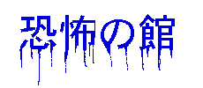

ここは恐怖の館です......。
私はあなたを簡単に恐怖を味あわせることができます..。
しかし、それでは面白くありません。あなたはくだらない笑いが好きそうですね。では、笑いが恐怖になるということをしっていますか？昔、ドリフで「志村！うしろ！うしろ！」というのが流行りました。あれは、恐怖を笑いへと変換させるものです。実際に熊のぬいぐるみがあなたの後ろにいたら、それは恐怖ですがドリフの世界という安心感が、その恐怖が笑いとなっているのです。
やっぱり、ドリフは偉大だね。
話しがそれてしまいました。ここでは、その反対。笑いを恐怖に変換させるのです......。
恐怖を見る
また、こんな恐怖のページもありました。
たまごっちゃん日記